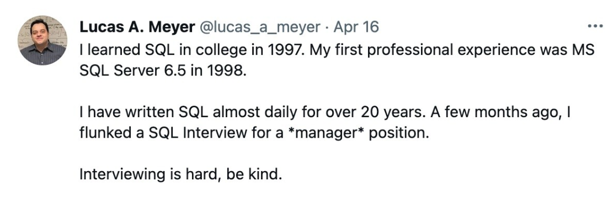

How to fail a technical phone screen
I wrote earlier about the hiring process for technical positions at big technology companies. The three main steps are: 1) resume review, 2) technical phone screen, 3) on-site interview (part technical, part behavioral). This article is about the technical phone screen and how to (not) fail it.
While usually disappointing, failing is not necessarily bad: it’s sometimes better to fail fast. You may get more time to focus on positions that you’re better suited for. I have myself failed several phone screens.

Why we do technical phone screens
Imagine you come back hungry from a longer-than-expected trip, open the fridge and find an open bottle of milk. Do you sniff it first to make sure it’s not spoiled or drink it outright?
Sniffing tends to be the lower cost solution. It’s an imperfect solution, as maybe you’ll find tomorrow that the milk was spoiled but wasn’t stinky yet. However, if the milk is spoiled and already stinky, sniffing it is a lot less disgusting than taking a sip.
The phone screen is a sniff test. It is imperfect, it may be a bad experience, but it has a much lower cost than an interview. Although we occasionally use information from the phone screen in further steps of the hiring process, the main goal of a phone screen is to assess whether a candidate has a chance to pass the on-site interview.
Given the potential high costs of a false positive in a phone screen, interviewers that do phone screens tend to be more experienced than the average on-site interviewer. It’s also common for the hiring manager to be a phone screener. A phone screen can sometimes be the hardest interview in the whole process.
When is a phone screen successful?
There’s only one clear and obvious case when the technical phone screen is not successful: a candidate passes the phone screen but fails hard at the interview. In that case, people in the interview panel may be annoyed at the phone screener.
There are several other outcomes that won’t be judged as harshly: the candidate fails the interview but just barely, the candidate fails the interview for that position but is a good fit for another, the candidate fails the interview for that position level but can be hired at a lower level. The phone screener won’t get called out on those.
It’s a lot harder to see failures when the candidate is rejected at the phone screen interview, as it’s harder to track what happened to the candidate. There are several cases of developers failing a phone screen in a company and being hired (and becoming very successful) in another, sometimes more prestigious, company.
Note that the incentives are biased towards phone screeners rejecting more candidates than they should. This is a good reason to have phone screen interviewers be more experienced people (who may care less about other people being annoyed at them) or the hiring manager, who would take more risk to hire candidates.
I have no scientific basis or good data for my next statement, but I think that regardless of the incentives above, phone screens still tend towards having more false negatives, that is, they reject people that would do well.
How people fail phone screens
Cheating
One of the defining characteristics of phone screens is that they are remote. Therefore, it’s easier to cheat on them. The whole interviewing process is grueling, and the benefits of passing are pretty great, so I do understand why people want to cheat. I imagine it even works for some people. When it doesn’t work, however, it’s pretty bad.
As is widely known, lot of technical interview questions and their answers are available on LeetCode. Some interviewers use LeetCode questions, but adapt them for the phone screen interview, usually with good intentions: adding simplifying conditions to make the question easier and therefore making it possible to complete the question during a phone screen.
When cheating candidates hear the question and search for it in LeetCode, they are usually elated to find the answer and gleefully type it pretending that they’re thinking about it on the spot. However, since the question was adapted, the LeetCode answer doesn’t work, it doesn’t even make any sense: it solves a different, more complex problem than the one being asked.
Although the consequences may vary, they are at best the same as being eliminated by simply failing. If the candidate were to try to answer the question normally, they would probably do much better.
Lying on their resumes
If the position requires SQL or some programming language, you are likely to be asked questions about SQL or that programming during the phone screen. I have seen candidates apply to positions that require SQL, write that they know SQL in their resume, get to the phone screen, and then say that they don’t know SQL when asked basic questions.
The rational explanation I can come up with is that these candidates are hoping for a false positive. As bad as the interview process is, it’s more likely to generate false negatives than false positives, and I think a candidate would have better chances playing the lottery.
Not talking through their thinking
The candidate is asked a question, but actually doesn’t know exactly how to solve it. Maybe they are nervous and forgot not only the syntax but even some concepts. Maybe they aren’t as experienced as their resume led the recruiters to believe.
By talking through their thinking, candidates can show that they know something, and would usually get some hints if they’re going in the right direction. However, at least once a quarter I have some candidate that becomes absolutely silent instead of talking through what they’re thinking and eventually gives up. This makes it hard to help these candidates.
Interlude: interviews are hard
A while back, I ran an academic but unscientific experiment with some senior developer friends. We had 10 people participate. I chose a LeetCode problem and presented the solution to them. They were paired up such that half of them were interviewers, half of them were assigned to be candidates. The interviewers asked the same question that everybody had just seen to the “candidates”. The interviews were recorded and the “candidates” and interviewers were told that the recordings would be shown to students and some of their colleagues. This last part was a trigger: this was supposed to make the “candidates” nervous and self-conscious.
The question was a LeetCode “easy” question. The “candidates” were senior developers and they had seen the answer minutes before. Regardless, 3 of them (60%) couldn’t complete the question in 20 minutes with hints. The remaining 2 “candidates” needed hints to finish. All of them missed some key detail.
Regardless, they would all pass a phone screen.
How people pass phone screens
They communicate
Most candidates I see passing phone screens first restate the problem in their own words to make sure they understand it, clearly state any assumptions they are making, and then talk through their strategy to solve it. They check with the interviewer if their understanding, assumptions and strategy make sense. It is easier to fix problems in the beginning rather than after they start coding.
They are organized
While I understand a candidate will be very nervous during a phone screen and that is likely going to make it harder for them to organize their thinking, I think the strategies below will help them calm down and still be able to organize their thinking.
- They comment their code: I wish I saw more comments in production. Of course, I wish I saw more comments in interviews. These comments may help you structure your thinking better and not forget things.
- They use meaningful function and variable names: I wish I saw more meaningful names in production code. Of course, I wish I saw more meaningful names in interviews. This will help you remember what your code is supposed to do, and it will also help the interviewer understand what you’re trying to do and help you.
They don’t try to show perfection during the phone screen
I always try to tell my candidates that I don’t expect perfection, using different words. Although perfection may happen - I see it about once a year - most candidates will not get the answers completely correct. They will forget some condition, have some syntax problem, provide a solution that is not optimal. That’s usually ok.
Trying to be perfect is likely to make candidates focus on the wrong things during the interview and get nervous if they can’t be perfect at that time, which will in turn prevent them from showing a lot of things that they’re perfectly good at.
Remember that denominators can be large
When you see people’s profiles on LinkedIn, you may think they have everything figured out and they just cruised to success, passing all phone screens and interviews and landing directly into their careers at prestigious companies.
That’s pretty far from the truth. Most people I know failed several interviews before getting where they are. The process is far from perfect and has a lot of false negatives.
Of course a failure is a signal. You shouldn’t complete ignore it. You should try to learn from it. But be kind to yourself, too. Many people you admire failed quite a lot before eventually succeeding.